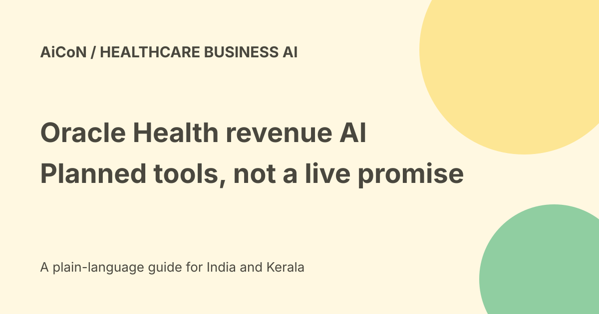

Oracle Health revenue-cycle AI: planned US tools and review
Oracle announced new revenue-cycle AI capabilities on 23 September 2026. Its release says they are planned for general availability in the coming months and aimed at healthcare organisations in the US. That is not a launch of a free insurance app for patients in India.

What revenue cycle means
A healthcare revenue cycle covers the administrative work around a patient's care: scheduling, checking coverage, recording services, preparing a bill and handling payment. A denial is a payer declining a submitted claim, which may need correction or appeal.
Oracle's announcement brings AI earlier into that process. The aim is to catch missing information and reimbursement risks before they cause delays. The announcement is a vendor statement, not an independently measured result.
The five announced capabilities
- Prior authorization: check coverage, retrieve documentation requirements, pre-fill information, attach evidence and support payer interactions.
- Clinical document quality: identify gaps and suggest improvements relevant to documentation and coding.
- Charge capture: review clinical context, modifiers and service details to reduce missed charges and denial risks.
- Medical coding for professional fees: recommend coding from clinical documentation and patient context.
- Appeal management: identify payment differences and create appeal packets when a decision to appeal has been made.
The last condition matters. Creating a packet after a decision is not the same as deciding independently to appeal or submitting an appeal without approval.
Planned is not currently deployed
The release explicitly says general availability is planned in the coming months. It does not provide a confirmed date for every module or prove access in a particular hospital today.
Oracle also describes future connections to financial reconciliation, revenue accounting, treasury and analytics through enterprise applications. Treat those as product direction, not a verified integration in your own environment.
Existing denial documentation is separate
Oracle's current product documentation describes reviewing a Denial agent's root-cause analysis and suggested resolution for items marked Needs Review. It instructs the reviewer to examine the details and patient information.
If the reviewer agrees and no further follow-up is possible in that reimbursement system, they can mark the denial closed. A closed denial can be retrieved by claim ID. These documented controls do not establish that all five September announcements are already generally available.
A careful healthcare evaluation
- Confirm the exact module, version and release status with Oracle.
- Choose an approved test workflow and masked sample records.
- Compare coverage requirements with the actual payer rules.
- Check suggested codes against clinical documentation.
- Review missing evidence and conflicting records.
- Define who approves charge changes and appeals.
- Measure correct submissions, review effort and errors.
- Keep audit records and a way to correct mistakes.
No patient data was uploaded, account connected or claim submitted for this guide. This is an evaluation checklist, not a tested installation procedure.
Why human review remains necessary
A recommendation can misread a note, apply the wrong payer rule or use incomplete information. Faster billing is not permission to inflate charges, change a clinical fact or ignore a patient's right to dispute a decision.
Keep clinical judgement, coding responsibility and financial approval with the appropriate people. Verify the source and the reason behind an output rather than trusting fluent wording.
India, pricing and free access
The September announcement names US healthcare organisations. It does not establish an Indian insurance integration, IRDAI approval, Indian hosting or local billing support.
No public final price, self-service free tier or INR quote was established for these new capabilities. Licensing, implementation and support need a scoped contract. A public announcement or documentation page is free to read; using enterprise software is a different question.
Health-data privacy
Claims can contain medical, identity and financial details. Check permitted processing, access roles, retention, logs, subprocessors and deletion before a pilot.
Do not send patient files through a personal account or to an unverified support address. Use only approved channels and the minimum records required.
What changed since the original post?
We retain the planned-release and US-market boundaries, explain the five roles and distinguish existing denial-review documentation from the new announcement. No live rollout or guaranteed reduction in denials is claimed.
Frequently asked questions
Can an Indian patient install this for free?
No such consumer product was established.
Does it guarantee reimbursement?
No. Payer decisions and accurate records still matter.
Are all five capabilities live?
The checked September release says planned availability in the coming months.
Sources: Oracle-issued September release · Official denial-review documentation. Checked 7 October 2026.